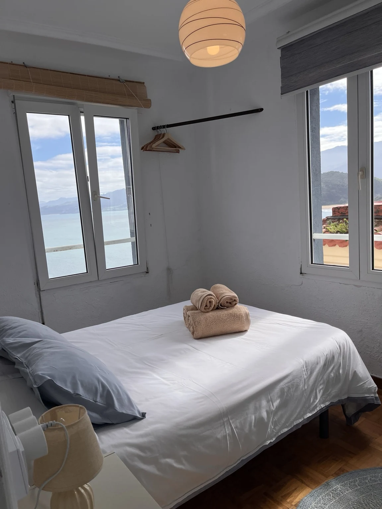
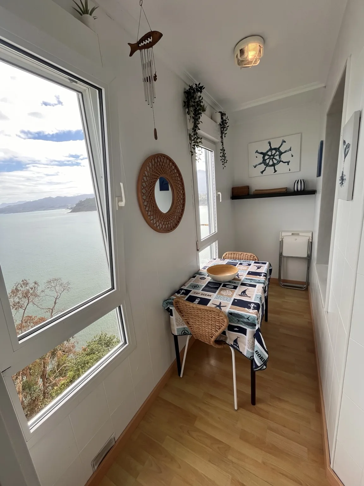

Preparación y anuncio
Revisión inicial, orientación sobre equipamiento, fotografías, textos y presentación del alojamiento.
Un servicio que conecta el anuncio, las reservas, la atención al huésped y el cuidado de la vivienda.
Cuéntanos qué necesitasLastres · Colunga · Caravia y alrededores

Organizamos contigo qué incluye la gestión y qué tareas necesita tu casa.
Revisión inicial, orientación sobre equipamiento, fotografías, textos y presentación del alojamiento.
Coordinación de solicitudes, calendarios y ajustes de precios acordados con el propietario.
Comunicación antes de llegar, indicaciones de acceso y acompañamiento durante la estancia.
Organización de llaves, revisión de la casa y coordinación de los cambios entre reservas.
Preparación de la vivienda, lavandería, ropa de cama, toallas y consumibles según lo acordado.
Revisiones, aviso al propietario y coordinación con técnicos cuando haga falta.

Si quieres utilizarla en determinadas fechas, lo hablamos para coordinar el calendario y preparar la vivienda para tu llegada.
Las compras, reparaciones y trabajos de terceros se acuerdan contigo. Te contamos qué hace falta antes de actuar.
La propuesta depende de la vivienda y de los servicios acordados. Tras conocerla, te explicamos la comisión o el presupuesto y los costes que se facturan por separado.
Las coordinamos dentro de la operativa. Su forma de cobro y quién asume cada importe se detallan en la propuesta, antes de comenzar.
Sí. Puedes contar con limpieza, lavandería, apoyo con llegadas, anuncios o revisiones sin contratar la gestión completa.
Revisamos contigo lo que falta y podemos acompañarte con la preparación y la organización de los trámites. Cada vivienda requiere una valoración propia.
Cuéntanos dónde está y en qué punto se encuentra.